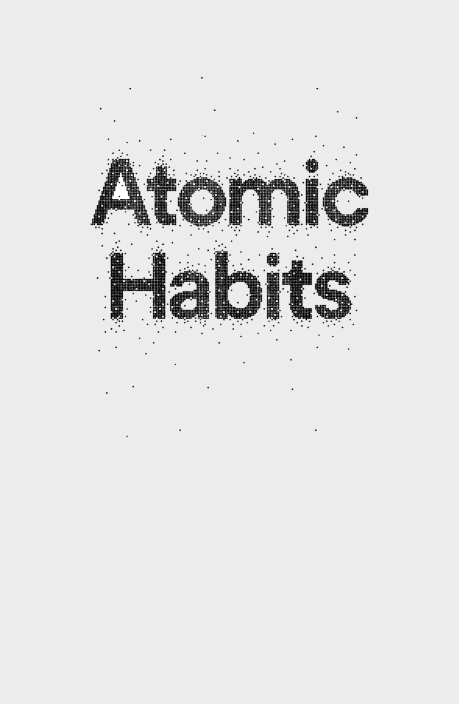
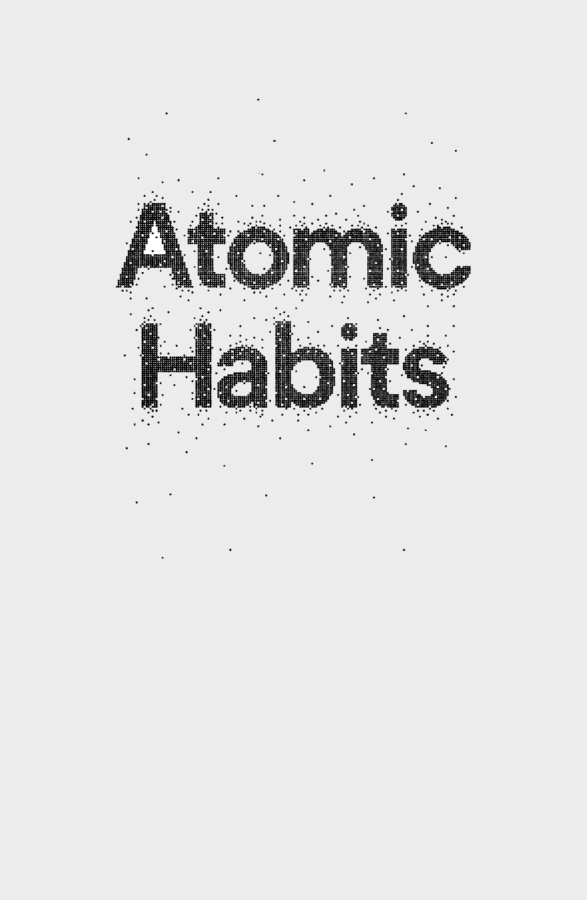
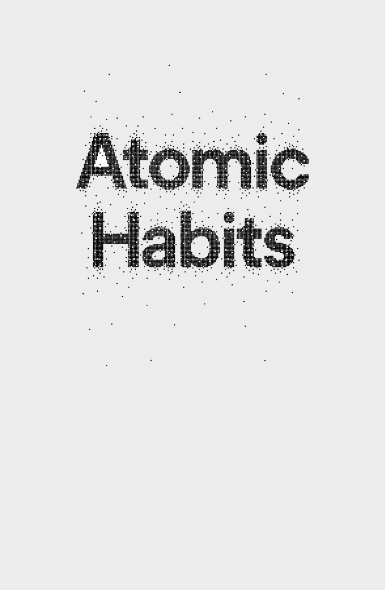
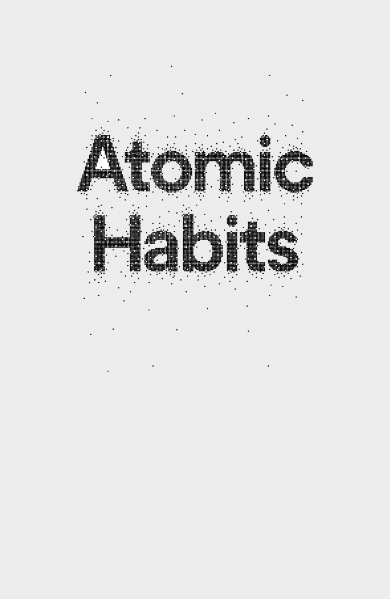

Daftar Isi
Pengantar
Kisah Saya
Pada hari terakhir tahun kedua saya di SMA, tongkat pemukul bisbol menghantam muka saya. Ketika seorang teman mengambil giliran memukul, tongkat pemukul terlepas dari tangannya dan terbang ke arah saya sebelum menghantam langsung ke bagian di antara kedua mata saya. Saya tidak punya ingatan tentang peristiwa benturan yang dahsyat itu.
Tongkat pemukul itu menghantam muka saya begitu kuat sehingga hidung saya berubah bentuk menjadi seperti huruf U. Benturan itu membuat jaringan lunak otak saya terempas ke dinding dalam tengkorak saya. Dalam seketika, pembengkakan langsung menyebar ke seluruh kepala. Dalam sepersekian detik, hidung saya patah, ada sejumlah fraktur tengkorak, dan ada dua serpih kelopak mata yang rontok.
Ketika membuka mata, saya melihat orang-orang menatap saya dan memburu untuk memberikan bantuan. Saya menunduk dan melihat bintik-bintik merah di baju saya. Salah seorang teman kelas membuka kaus dan memberikannya kepada saya. Saya memakainya untuk menyumbat darah yang mengucur deras dari hidung saya. Terguncang dan bingung, saya tidak tahu seberapa serius cedera yang saya alami.
Guru saya merangkul dan mengajak saya memulai perjalanan panjang dengan berjalan ke klinik sekolah: menyeberang lapangan, menuruni bukit, dan kembali ke gedung sekolah. Entah berapa orang yang memapah saya, membuat saya tetap tegak. Kami berjalan pelan-pelan. Tidak ada yang sadar bahwa setiap menit dalam situasi ini sangatlah penting.
Setiba di klinik sekolah, perawat mengajukan serangkaian pertanyaan.
"Tahun berapa ini?"
"1998," jawab saya. Padahal seharusnya 2002.
"Siapa presiden Amerika Serikat?"
"Bill Clinton," kata saya. Jawaban yang benar adalah George W. Bush.
"Siapa nama ibu kandungmu?"
"Mm. Mmm." Saya terbata-bata. Sepuluh detik berlalu.
"Patti," kata saya santai, tak peduli pada kenyataan bahwa saya memerlukan sepuluh detik untuk mengingat nama ibu sendiri.
Itulah pertanyaan terakhir yang saya ingat. Tubuh saya tak sanggup mengatasi pembengkakan cepat dalam otak saya dan saya kehilangan kesadaran sebelum ambulans tiba. Sekian menit kemudian, saya diangkut ke rumah sakit terdekat.
Tak lama setelah tiba di sana, tubuh saya mulai gagal berfungsi. Sulit bagi saya untuk menjalankan fungsi-fungsi dasar seperti menelan dan bernapas. Saya mengalami serangan kejang pertama hari itu. Kemudian saya berhenti bernapas sama sekali. Sementara dokter bergegas memasok saya dengan oksigen, mereka juga memutuskan rumah sakit daerah itu tidak memadai untuk menangani situasi saya dan meminta helikopter menerbangkan saya ke rumah sakit yang lebih besar di Cincinnati.
Saya didorong keluar dari ruang gawat darurat menuju helipad di seberang jalan. Kereta dorong terguncang-guncang di sepanjang jalan ketika seorang perawat mendorong saya sementara perawat lain tak henti memompakan oksigen. Ibu saya, yang sudah tiba di rumah sakit beberapa saat sebelumnya, naik ke helikopter menemani saya. Saya belum sadar dan tak mampu bernapas sendiri, sementara ibu saya terus memegangi tangan saya selama penerbangan.
Ketika ibu saya menemani saya dalam helikopter, ayah saya pulang untuk memberitahu saudara-saudara saya. Dengan berkaca-kaca ia mengatakan kepada adik perempuan saya bahwa ia tidak bisa ikut dalam acara kenaikan kelas adik saya malam itu. Setelah menitipkan adik-adik saya kepada keluarga dan teman, ia berkendara ke Cincinnati untuk menemani ibu saya.
Ketika saya dan ibu saya mendarat di atap rumah sakit, sebuah tim terdiri atas hampir dua puluh dokter dan perawat langsung menjemput saya di helipad dan mendorong saya ke trauma unit. Saat itu pembengkakan di otak saya telah begitu parah sehingga saya berulang kali mengalami kejang. Tulang hidung saya perlu diperbaiki, tapi kondisi saya tidak mendukung untuk menjalani operasi. Setelah sekali lagi mengalami kejang-pada hari ketiga-saya sengaja dibuat koma dan bernapas dengan menggunakan bantuan ventilator.
Orangtua saya bukan pertama kali ke rumah sakit ini. Sepuluh tahun sebelumnya, mereka datang ke gedung yang sama di lantai dasar setelah adik perempuan saya didiagnosis menderita leukemia pada usia tiga tahun. Saya lima tahun kala itu. Adik laki-laki saya baru enam bulan. Setelah dua setengah tahun menjalani kemoterapi, pengambilan cairan tulang belakang, dan biopsi sumsum, adik perempuan saya akhirnya keluar dari rumah sakit dengan bahagia, sehat, dan bebas dari kanker. Dan sekarang, setelah sepuluh tahun menjalani hidup normal, orangtua saya harus kembali ke tempat yang sama bersama anak yang berbeda.
Sementara saya sengaja dibuat koma, rumah sakit mendatangkan rohaniwan dan pekerja sosial untuk menghibur orangtua saya. Ia orang yang sama yang pernah menemui mereka sepuluh tahun lalu, setelah tahu adik saya menderita kanker.
Ketika siang berubah menjadi malam, beberapa mesin mem- buat saya tetap hidup. Orangtua saya berusaha tidur di karpet ru- mah sakit-mereka sangat kelelahan, tapi bolak balik terbangun dengan rasa cemas. Belakangan ibu saya bercerita, "Itu malam paling buruk yang pernah kualami."
Syukurlah, esok paginya saya mampu bernapas lagi sampai ke tingkat yang membuat para dokter berani melepaskan saya dari kondisi koma. Ketika akhirnya kesadaran saya kembali, ternyata saya kehilangan kemampuan mencium bau. Sebagai uji, seorang perawat meminta saya meniup dengan hidung kemudian mengendus sekotak jus apel. Indra penciuman saya kembali, tapi yang di luar dugaan aksi mengembus napas kuat-kuat ternyata memaksa udara menembus bocor pada tulang kelopak mata dan mendorong mata kiri saya keluar. Bola mata saya keluar dari rongga orbitalnya, dan tidak lepas hanya karena masih ada serabut saraf yang menghubungkannya dengan otak.
Menurut dokter mata, bola mata saya perlahan-lahan akan kembali ke tempat semula sejalan dengan terlepasnya udara yang terjebak, tapi entah berapa lama waktu yang diperlukan. Saya di jadwalkan menjalani operasi satu pekan kemudian, yang berarti saya masih harus beristirahat beberapa waktu lagi. Saya seperti petinju yang babak belur dalam turnamen tinju, tapi saya boleh meninggalkan rumah sakit. Saya pulang dengan hidung patah, belasan fraktur pada wajah, dan mata kiri yang nyaris lepas.
Bulan-bulan berikutnya terasa sulit. Rasanya seolah-olah segala sesuatu dalam hidup ditunda sejenak. Selama beberapa pekan penglihatan saya ganda, dan saya secara harfiah tidak bisa melihat lurus ke depan. Sebulan lebih kemudian bola mata saya akhirnya kembali ke posisi normalnya. Karena kadang masih kejang-kejang dan penglihatan masih bermasalah, delapan bulan kemudian saya baru dapat mengendarai mobil lagi. Saat fisioterapi saya melatih pola-pola motorik dasar seperti berjalan mengikuti garis lurus. Saya bertekad tidak membiarkan kecelakaan itu meruntuhkan semangat saya, tapi tak jarang saya merasa tertekan dan sangat galau.
Perih sekali rasanya ketika sadar betapa jauh jalan yang harus saya tempuh untuk kembali ke lapangan bisbol satu tahun kemudian. Bisbol selalu menjadi bagian utama dalam hidup saya. Ayah saya pernah bermain untuk sebuah klub liga kecil bernama St. Louis Cardinals, dan saya mempunyai mimpi untuk bermain secara profesional. Setelah rehabilitasi selama berbulan-bulan, yang saya inginkan lebih dari yang lain adalah kembali ke lapangan.
Namun, upaya kembali ke lapangan bisbol tidaklah mulus. Ketika musim pertandingan digelar, saya satu-satunya siswa tahun pertama yang tidak lolos ke tim bisbol utama. Saya pernah bermain bersama siswa tahun kedua pada kejuaraan tim cadangan. Saya telah bermain bisbol sejak usia empat tahun, dan bagi seseorang yang telah sangat berpengalaman dalam olahraga ini, tidak lolos ke tim utama sangatlah memalukan. Saya masih ingat sekali peristiwa hari itu. Saya duduk di mobil dan menangis sambil mencari-cari gelombang di radio, mendengarkan lagu-lagu penghibur kegalauan saya.
Setelah setahun tanpa rasa percaya diri, pada tahun keempat saya berusaha masuk ke tim utama lagi, tapi jarang berhasil di lapangan. Secara keseluruhan, saya memainkan sebelas inning da- lam pertandingan bisbol tim utama, hampir tidak mencapai satu game pun.
Terlepas dari karier bisbol yang kurang cemerlang di SMA, saya masih percaya dapat menjadi pemain besar. Dan saya tahu supaya segalanya membaik, sayalah satu-satunya yang bertanggung jawab untuk mewujudkannya. Titik perubahan datang da tahun setelah kecelakaan itu, ketika saya mulai kuliah di Denison University. Itu awal baru, dan di situ untuk pertama kalinya saya menemukan kekuatan dahsyat kebiasaan-kebiasaan kecil.
Kuliah di Denison adalah salah satu keputusan terbaik saya dalam hidup. Saya mendapat posisi dalam tim bisbol dan, walaupun berada di urutan terbawah sebagai mahasiswa baru, kegembiraan saya meluap-luap. Meskipun sempat kacau ketika di SMA, saya berhasil menjadi atlet universitas.
Saya sadar belum akan dimainkan dalam tim bisbol dalam waktu dekat, jadi saya berfokus pada upaya mengatur diri. Sementara teman-teman begadang untuk mengobrol atau bermain video game, saya membangun kebiasaan tidur yang baik dengan tidur lebih dini setiap malam. Di dunia asrama mahasiswa yang serba bebas dan jorok, saya bertekad membuat kamar saya tetap bersih dan rapi. Perbaikan-perbaikan ini remeh, tapi memberi saya kesan mampu mengendalikan hidup. Saya mulai merasa percaya diri lagi. Dan kepercayaan diri yang meningkat ini berimbas ke kelas karena kebiasaan-kebiasaan belajar saya ikut membaik dan saya berusaha meraih A untuk semua mata kuliah selama tahun pertama
Kebiasaan adalah rutinitas atau perilaku yang dijalankan secara teratur-dan, dalam banyak kasus, secara otomatis. Ketika semester satu berganti ke semester berikutnya, saya berhasil mengumpulkan kebiasaan-kebiasaan kecil tapi konsisten yang akhirnya mengantar ke hasil-hasil yang tak terbayangkan sewaktu saya baru mulai. Sebagai contoh, untuk pertama kali dalam hidup, saya membiasakan mengangkat beban beberapa kali seminggu, dan pada tahun-tahun berikutnya, tubuh saya yang setinggi 190 cm bertambah kekar dengan bobot naik dari 85 kg menjadi 100 kg.
Ketika musim pertandingan tahun kedua dimulai, saya men- dapat posisi awal sebagai pitcher. Pada tahun berikutnya, saya terpilih sebagai kapten tim, dan pada pengujung tahun saya terpilih menjadi anggota tim utama. Namun baru pada musim tahun terakhir saya, kebiasaan-kebiasaan tidur, belajar, dan latihan fisik sungguh mulai mendatangkan hasil.
Enam tahun setelah kecelakaan terhantam pemukul bisbol tepat di wajah, diterbangkan ke rumah sakit, dan sengaja dibuat koma, saya terpilih sebagai atlet putra terbaik Denison University dan salah satu ESPN Academic All-America Team-kehormatan yang hanya diberikan kepada 33 pemain di seluruh Amerika. Ketika lulus, nama saya tercantum di buku tahunan universitas dalam delapan kategori berbeda. Pada tahun yang sama, saya dianugerahi penghargaan akademis tertinggi di universitas itu, Medali Rektor.
Semoga Anda memaafkan saya karena cerita yang terkesan berlebihan ini. Sejujurnya, tidak ada yang legendaris atau historis dalam karier olahraga saya. Saya tidak pernah sampai menjadi pemain profesional. Namun, dengan mengenang tahun-tahun itu, saya percaya telah meraih sesuatu yang terbilang langka: saya berhasil memaksimalkan potensi. Dan saya percaya konsep-kon- sep dalam buku ini juga dapat membantu Anda memaksimalkan potensi.
Kita semua berhadapan dengan tantangan dalam hidup. Bagi saya, tantangan itu adalah cedera dalam olahraga, dan pengalaman itu mengajarkan sesuatu yang sangat penting: perubahan-perubahan yang terkesan kecil dan remeh pada awalnya akan memberikan hasil-hasil yang menakjubkan bila Anda bersedia menjalaninya sampai bertahun-tahun. Kita semua berhadapan dengan kemunduran, tapi dalam jangka panjang kualitas hidup kita sering kali bergantung pada kualitas kebiasaan kita. Dengan kebiasaan yang sama, Anda akan mendapatkan hasil serupa. Namun, dengan kebiasaan yang lebih baik, apa pun menjadi mungkin.
Barangkali ada orang yang mampu meraih kesuksesan luar bi- asa dalam semalam. Saya tidak kenal satu pun di antara mereka, dan saya jelas bukan salah seorang di antara mereka. Tidak ada yang paling menonjol dalam perjalanan hidup saya dari kondisi dibuat koma sampai meraih Academic All-American; tapi banyak yang menonjol. Yang terjadi adalah evolusi bertahap, serangkaian panjang kemenangan kecil dan terobosan sangat kecil. Satu-satunya cara yang membuat saya maju satu-satunya cara yang saya pilih adalah mulai dengan hal kecil. Dan saya menerapkan strategi yang sama beberapa tahun kemudian, ketika memulai usaha sendiri dan menulis buku ini.
Pada November 2012, saya mulai menerbitkan artikel di james- clear.com. Selama bertahun-tahun, saya menyimpan catatan- catatan tentang pengalaman-pengalaman pribadi saya yang ber- kaitan dengan kebiasaan dan saya akhirnya siap membagikan semua itu kepada publik. Saya mulai dengan menerbitkan artikel baru setiap Senin dan Kamis. Dalam beberapa bulan, kebiasaan menulis yang sederhana ini membuat saya mendapatkan seribu pelanggan email pertama, dan pada akhir 2013 angka itu naik menjadi lebih dari tiga puluh ribu orang.
Pada 2014, daftar email saya berkembang ke lebih dari sera- tus ribu pelanggan, yang menjadikannya salah satu newsletter de- ngan pertumbuhan paling cepat di internet. Saya merasa menja di pembual ketika mulai menulis dua tahun silam, tapi sekarang saya dikenal sebagai pakar dalam hal kebiasaan-label baru yang membuat saya sangat senang tapi sekaligus tidak nyaman. Saya tidak pernah memandang diri sebagai pakar dalam topik ini, melainkan sekadar orang yang bereksperiman bersama-sama dengan para pembaca.
Pada 2015, saya meraih dua ratus ribu pelanggan email dan menandatangani kontrak buku dengan Penguin Random Hou- se untuk mulai menulis buku yang sedang Anda baca sekarang. Ketika audiens saya bertambah, begitu pula peluang bisnis saya. Saya lebih banyak diminta berceramah di perusahaan-perusaha- an terkemuka tentang ilmu pembentukan kebiasaan, perubahan perilaku, dan perbaikan yang terus-menerus. Saya menjadi pem- bicara utama pada konferensi-konferensi di Amerika Serikat dan Eropa.
Pada 2016, artikel-artikel saya mulai muncul secara teratur di publikasi-publikasi besar seperti Time, Entrepreneur, dan Forbes. Yang menakjubkan, tulisan saya dibaca oleh lebih dari delapan juta orang tahun itu. Pelatih-pelatih di NFL, NBA, dan MLB mulai membaca karya saya dan membagikannya kepada tim-tim mereka.
Pada awal 2017, saya meluncurkan Habits Academy, yang menjadi landasan pelatihan perdana bagi organisasi-organisasi dan individu-individu yang tertarik membangun kebiasaan-kebiasaan yang lebih baik dalam hidup dan pekerjaan.' Perusahaan- perusahaan yang termasuk Fortune 500 serta usaha-usaha rintisan yang baru tumbuh mulai merekrut pemimpin dan melatih staf. Secara keseluruhan, lebih dari sepuluh ribu pemimpin, manajer, pelatih, dan guru telah digembleng oleh Habits Academy, dan karya saya bersama mereka telah mengajarkan banyak sekali kepada saya tentang apa yang diperlukan untuk membuat kebiasaan-kebiasaan tersebut berhasil di dunia nyata.
Sewaktu saya memberikan sentuhan akhir pada buku ini dalam 2018, jamesclear.com menerima jutaan pengunjung per bulan dan hampir lima ratus ribu orang menjadi pelanggan untuk email newsletter saya-jumlah yang sungguh di luar dugaan ketika saya baru mulai karena berpikir tentang hal itu pun dulu saya tidak berani.
Pengusaha dan investor Naval Ravikant berkata, "Untuk menulis buku yang hebat, mula-mula Anda harus menjadi buku itu." Saya mulai mengetahui gagasan-gagasan yang disebutkan di sini kare- na saya terpaksa mempraktikkannya. Saya harus mengandalkan kebiasaan-kebiasaan kecil untuk bangkit dari cedera, agar menja- di lebih kuat secara fisik, agar dapat tampil berprestasi di lapangan, agar dapat menjadi penulis, agar dapat membangun bisnis yang sukses, dan sekadar untuk berkembang menjadi orang dewasa yang bertanggung jawab. Kebiasaan-kebiasaan kecil membantu memaksimalkan potensi saya, dan karena Anda memilih buku ini, saya menebak bahwa Anda juga ingin memaksimalkan potensi Anda.
Di halaman-halaman mendatang, saya membagikan rencana selangkah demi selangkah untuk membangun kebiasaan yang lebih baik-bukan untuk beberapa hari atau minggu, tapi seumur hidup. Meskipun sains mendukung semua yang telah saya tulis, buku ini bukan makalah penelitian ilmiah; buku ini petunjuk pelaksanaan. Anda akan menemukan kebijaksanaan dan saran praktis di bagian depan dan di bagian tengah, sementara saya menerangkan ilmu di balik cara menciptakan dan mengubah kebiasaan-kebiasaan Anda yang mudah dipahami dan diterapkan.
Bidang-bidang yang saya manfaatkan-biologi, ilmu saraf, filsafat, psikologi, dan sebagainya-sudah ada bertahun-tahun. Yang saya tawarkan kepada Anda adalah sintesis gagasan gagasanan terbaik yang pernah terpikir oleh orang-orang cerdas sejak lama sekali serta temuan-temuan paling menarik yang dibuat oleh ilmuwan belakangan ini. Sumbangan saya, semoga, adalah menemukan gagasan-gagasan yang paling penting dan mengaitkannya sedemikian sehingga sangat mudah diterapkan. Apa pun yang baik dalam buku ini adalah jasa banyak pakar sebelum saya. Sedangkan apa pun yang konyol, anggaplah itu kesalahan saya.
Tulang punggung buku ini adalah model kebiasaan empat langkah saya mendapatkan petunjuk (cue), menumbuhkan gairah (craving), menanggapi (response), dan menikmati hasilnya (reward)--dan empat kaidah perubahan perilaku yang berkembang dari langkah-langkah tadi. Pembaca yang berlatar belakang psikologi mungkin mengenali sebagian istilah ini dari operant conditioning, yang pertama kali didalilkan sebagai "stimulus, response, reward" oleh B. F. Skinner pada 1930-an dan belum lama ini dipopulerkan sebagai "cue, routine, reward" dalam The Power of Habit oleh Charles Duhigg.
Ilmuwan perilaku seperti Skinner sadar bahwa jika menawarkan ganjaran yang tepat, Anda dapat membuat orang beraksi dengan cara tertentu. Namun, meskipun model Skinner sungguh memberikan hasil yang istimewa dalam menerangkan bagaimana rangsangan dari luar memengaruhi kebiasaan kita, model itu belum cukup menjelaskan bagaimana pikiran, perasaan, dan keya- kinan kita berdampak terhadap perilaku kita. Kondisi-kondisi internal-suasana hati dan emosi juga penting. Dalam dasawarsa lalu, ilmuwan mulai menentukan hubungan antara pikiran, perasaan, dan perilaku kita. Penelitian ini juga dibahas dalam buku ini.
Secara keseluruhan, kerangka yang saya tawarkan adalah model terpadu antara ilmu kognitif dan ilmu perilaku. Saya percaya ini salah satu model pertama perilaku manusia yang dapat menjelaskan dengan tepat pengaruh rangsangan eksternal dan emosi internal terhadap kebiasaan kita. Sementara ada istilah yang terasa akrab, saya percaya bahwa hal-hal terperinci-dan penerapan Empat Kaidah Perubahan Perilaku-akan menawarkan cara baru untuk membentuk kebiasaan-kebiasaan Anda.
Perilaku manusia selalu berubah: dari situasi ke situasi, dari saat ke saat, dari detik ke detik. Namun, buku ini bicara tentang yang tidak berubah. Buku ini membahas dasar-dasar perilaku manusia. Prinsip-prinsip abadi yang dapat Anda andalkan dari tahun ke tahun. Gagasan-gagasan yang dapat Anda pakai untuk melandasi bisnis, keluarga, hidup Anda.
Tidak ada cara tunggal untuk menciptakan kebiasaan yang lebih baik, tapi buku ini menjelaskan dengan cara terbaik yang saya ketahui pendekatan yang akan efektif, tak peduli di mana Anda mulai atau apa yang sedang ingin Anda ubah. Strategi yang saya bahas relevan bagi siapa pun yang mencari sistem selangkah demi selangkah untuk perbaikan, entah sasaran Anda adalah kesehatan, keuangan, produktivitas, hubungan, atau semuanya. Selama terkait dengan perilaku manusia, buku ini akan menjadi panduan Anda
Mengapa Perubahan Sangat Kecil
Menghasilkan Perbedaan Besar
Bab 1
Dahsyatnya Kekuatan Atomic Habits
Nasib British Cycling berubah pada suatu hari dalam tahun 2023. Organisasi itu, yang merupakan induk organisasi cabang olahraga sepeda profesional di Britania Raya, baru saja merekrut Dave Brailsford sebagai direktur performa yang baru. Pada waktu itu, pembalap sepeda profesional di Britania Raya telah mengalami hampir seratus tahun dalam prestasi yang sedang-sedang saja. Sejak 1908, pembalap-pembalap Inggris hanya memenangkan satu medali emas di ajang Olimpiade, dan prestasi mereka bahkan lebih buruk lagi di lomba balap sepeda paling akbar, Tour de France. Dalam 110 tahun, tidak ada pem- balap Inggris yang pernah memenangkan ajang tersebut.
Bahkan, prestasi pembalap Inggris begitu tenggelam sehingga pabrik sepeda terbaik di Eropa menolak menjual sepeda kepada tim itu karena takut berpengaruh buruk pada penjualan sepeda- nya seandainya pembalap-pembalap profesional lain melihat atlet-atlet Inggris memakai produk tersebut.
Brailsford direkrut untuk membawa British Cycling ke arah baru. Yang membuatnya berbeda dari pelatih-pelatih terdahulu adalah komitmennya yang tiada henti terhadap strategi yang ia sebut "penghimpunan perolehan kecil", yang merupakan fal safah pencarian margin peningkatan sangat kecil dalam segala sesuatu yang Anda kerjakan. Menurut Brailsford, "Secara kese luruhan prinsip ini berasal dari gagasan bahwa jika Anda mengurai segala sesuatu yang dapat Anda pikirkan terkait dengan balap sepeda, dengan perbaikan 1% saja Anda akan mendapatkan kenaikan yang signifikan ketika menerapkannya bersama-sama sekaligus."
Brailsford dan pelatih-pelatihnya mulai dengan membuat penyesuaian-penyesuaian kecil yang bisa diharapkan dari tim pembalap sepeda profesional. Mereka merancang ulang jok sepeda agar lebih nyaman dan mengoleskan alkohol agar pada ban agar cengkeramannya lebih baik. Mereka meminta para pembalap memakai celana pendek dengan pemanas listrik guna mempertahankan suhu otot sewaktu bersepeda dan menggunakan sensor-sensor biofeedback untuk memonitor reaksi-reaksi tiap atlet terhadap suatu latihan. Tim menguji bermacam-macam bahan di terowongan angin dan meminta pembalap-pembalap jalan raya beralih mengenakan kostum balap indoor, yang terbukti lebih ringan dan aerodinamis.
Akan tetapi, mereka tidak berhenti di situ. Brailsford dan timnya terus berburu perbaikan-perbaikan 1% di bagian-bagian yang terlewatkan atau tak terduga. Mereka menguji bermacam-macam gel pijat untuk melihat mana yang menghasilkan pemulihan otot paling cepat. Mereka membayar seorang dokter untuk mengajari tiap pembalap cara terbaik mencuci tangan guna mengurangi peluang terkena virus influenza. Mereka menentukan jenis bantal dan kasur yang memungkinkan tidur lebih nyenyak bagi tiap pembalap. Mereka bahkan mengecat bagian dalam truk tim dengan warna putih, yang memudahkan mereka melihat debu-debu kecil yang biasanya tidak langsung terdeteksi padahal berisiko menurunkan performa sepeda yang telah disetel dengan baik.
Ketika perbaikan-perbaikan ini berikut ratusan perbaikan kecil lain diakumulasikan, hasilnya datang lebih cepat daripada yang pernah dibayangkan.
Hanya lima tahun sejak Brailsford direkrut, tim British Cycling mendominasi baik balap sepeda jalan raya maupun sirkuit di ajang Olimpiade 2008 di Beijing, tempat mereka secara dahsyat memenangkan 60% dari total medali emas yang diperebutkan. Empat tahun kemudian, ketika Olimpiade diselenggarakan di London, atlet-atlet Inggris menaikkan batas minimal prestasi mereka dan membuahkan sembilan rekor Olimpiade serta tujuh rekor dunia.
Pada tahun yang sama, Bradley Wiggins menjadi atlet balap sepeda Inggris pertama yang memenangkan Tour de France. Tahun berikutnya, teman satu timnya Chris Froome memenangkan lomba itu, dan terus menang lagi pada 2015, 2016, dan 2017, yang membuat tim Inggris meraih lima kemenangan Tour de France dalam enam tahun.
Selama rentang sepuluh tahun dari 2007 sampai 2017, pembalap sepeda Inggris memenangkan 178 kejuaraan dunia dan 66 medali emas Olimpiade atau Paralympic dan meraih lima kemenangan Tour de France yang oleh kalangan luas dipandang seba gai prestasi paling sukses dalam sejarah balap sepeda.¹
Bagaimana ini terjadi? Bagaimana suatu tim yang sebelumnya hanya sekumpulan atlet biasa berubah menjadi juara dunia melalui perubahan-perubahan sangat kecil yang, sepintas lalu, paling-paling hanya akan menghasilkan perubahan sekadarnya? Mengapa perbaikan-perbaikan kecil berakumulasi menjadi hasil-hasil yang begitu menakjubkan, dan bagaimana Anda dapat meniru pendekatan ini dalam hidup Anda sendiri?
Mudah sekali memberikan taksiran berlebihan atas pentingnya suatu momen yang menentukan dan membuat taksiran nilai terlalu rendah atas upaya membuat perbaikan-perbaikan kecil yang dilakukan setiap hari. Sering kali kita meyakinkan diri bahwa kesuksesan yang masif menuntut aksi yang masif pula. Entah menurunkan berat badan, membangun bisnis, menulis buku, memenangkan kejuaraan, atau meraih sasaran lain, kita memberi diri sendiri beban untuk membuat perubahan yang akan mengguncang bumi dan menjadi bahan perbincangan semua orang.
Sementara itu, perbaikan 1% sesuatu tak terlalu terasa-ka- dang malah tak terlihat padahal perbaikan itu dapat jauh lebih bermakna, terutama dalam jangka panjang. Perubahan dari suatu perbaikan sangat kecil tapi berlanjut dalam waktu lama bisa sa- ngat dahsyat. Berikut penjelasan matematikanya: jika Anda bisa menjadi 1% lebih baik setiap hari dalam setahun, akhirnya Anda akan 37 kali lebih baik pada pengujung tahun. Sebaliknya, jika Anda 1% lebih buruk setiap hari dalam setahun, Anda akan me nurun hampir menjadi nol. Yang berawal dari satu kemenangan kecil atau satu kemunduran remeh dapat terakumulasi menjadi jauh lebih besar.
Kebiasaan adalah bunga majemuk dalam perbaikan diri. Sama halnya dengan uang yang menjadi berlipat-lipat karena bunga majemuk, pengaruh kebiasaan menjadi berlipat-lipat sewaktu Anda mengulang-ulang kebiasaan itu. Perubahan yang dihasilkan pada suatu hari tertentu mungkin terkesan kecil, tapi dampak yang terjadi setelah berbulan-bulan dan bertahun-tahun kemudian bisa dahsyat. Ketika kita menengok ke belakang dua, lima, atau barangkali sepuluh tahun kemudian, nilai kebiasaan yang baik dan kerugian akibat kebiasaan buruk menjadi luar biasa nyata.
Dalam kehidupan sehari-hari konsep ini mungkin sulit diang gap baik. Kita sering mengabaikan perubahan-perubahan kecil karena terkesan tidak begitu penting saat itu. Jika Anda menabung sedikit uang sekarang, Anda belum menjadi jutawan. Jika Anda pergi ke sasana kebugaran tiga hari berturut-turut, bentuk tubuh Anda belum berubah. Jika Anda belajar bahasa Mandarin selama empat jam malam ini, Anda belum berhasil menguasai bahasa itu. Kita melakukan sejumlah perubahan, tapi hasilnya tidak pernah langsung terlihat, jadi kita mudah kembali ke rutinitas semula.
Sayangnya, laju transformasi yang lambat juga memudahkan kita membiarkan kebiasaan buruk tetap terjadi. Jika Anda makan makanan yang tidak sehat hari ini, timbangan Anda memang tidak langsung naik banyak. Jika Anda bekerja sampai larut malam ini dan mengabaikan keluarga, mereka akan memaafkan Anda. Jika Anda menunda kewajiban dan membiarkan proyek Anda tidak dikerjakan sampai besok, biasanya masih ada waktu untuk menyelesaikannya kemudian. Suatu keputusan tunggal mudah dibatalkan.
Namun, ketika kita mengulang 1% kesalahan, hari demi hari, dengan mengulang keputusan-keputusan buruk, mengulang kesalahan-kesalahan sangat kecil, dan merasionalisasi alasan-alasan kecil, pilihan-pilihan kecil kita mengalami proses bunga majemuk sampai menjadi racun. Akumulasi banyak salah langkah inilah 1% penurunan di sini dan di sana yang akhirnya mengantar ke masalah.